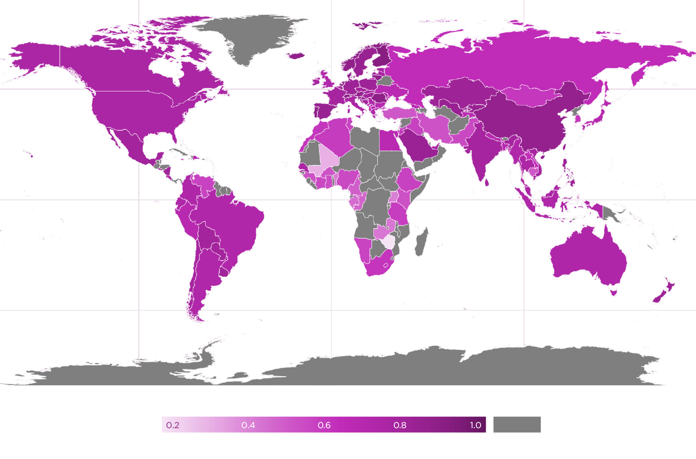

Insights from the First Global Survey of Balance and Harmony
Introduction
Scholarly understanding of happiness continues to advance with every passing year, with new ideas and insights constantly emerging. Some constructs, like life evaluation, have been established for decades, generating extensive research. Cantril’s “ladder” item on life evaluation, for example — the question in the Gallup World Poll upon which this report is based — was created in 1965.[1] By contrast, other well-being related topics are only beginning to receive due recognition and attention, including balance and harmony.
Balance and harmony — concepts that are closely linked but not synonymous — are used and defined in myriad ways, each having “fuzzy”[2] conceptual boundaries. We shall delve into their meaning in the first subsection below, but we can note here that across academic fields, they are invoked as important principles in the context of phenomena as varied as emotions,[3] attention,[4] motivation,[5] character,[6] diet,[7] sleep,[8] exercise,[9] work-life patterns,[10] relationships,[11] society,[12] politics,[13] and nature.[14] Furthermore, in the present day, balance/harmony are particularly associated with Eastern cultures. [15] But does that mean they have been overlooked or undervalued in the rest of the world? Possibly not. There are significant ideas and traditions around balance/harmony in the West, such as Aristotle’s ideal of the “golden mean.”[16]
In addition, two key well-being related domains in which balance/harmony apply, “work-life balance” and a “balanced diet,” have received considerable attention in the literature.[17] Moreover, balance/harmony have salience among the public at large: a survey of lay perceptions of happiness across seven Western nations found participants primarily defined happiness as a condition of “psychological balance and harmony,” while a more extensive follow-up study similarly observed that the most prominent psychological definition was one of “inner harmony” (featuring themes of inner peace, contentment, and balance).[18]
Balance/harmony have been particularly associated with Eastern cultures, historically and currently. But does that mean they are overlooked or undervalued in the rest of the world? Possibly not.
However, empirical insight into how balance/harmony are linked with happiness around the globe is rare and under-studied, mainly due to a lack of data. This chapter redresses this lacuna by reporting on a unique data set collected as part of the 2020 Gallup World Poll, constituting the most thorough global approach thus far to these topics. Based on our reading of the literature, we approached the analysis guided by two interlinked hypotheses: (1) balance/harmony matter to all people, and (2) balance/harmony are dynamics at the heart of well-being. As will be seen, both hypotheses were corroborated to some extent.
This introductory section discusses what balance/harmony are in themselves, as well as the related phenomenon of low arousal positive states (e.g., peace and calm). We next introduce several new questions used to measure balance/harmony which were added to the Gallup World Poll in 2020 and look at their global distribution of responses. Third, we examine whether balance/harmony matter for happiness — and specifically life evaluation, the construct at the centre of this report — and then test for regional heterogeneity in the associations. The chapter concludes with some considerations of the overall significance of balance/harmony.
Defining Key Concepts
What is meant by balance/harmony? Like many concepts, their meanings are contested and debated. Moreover, their conceptualisations are usually tied to specific domains of life rather than defined in the abstract. In the arena of physiology, for instance, one review of the literature suggested that balance has been operationalised in two main ways: as a physical state (e.g., “in which the body is in equilibrium”) and as a function (e.g., “demanding continuous adjustments of muscle activity and joint position to keep the bodyweight above the base of support”).[19] Nevertheless, having reviewed the application and conceptualization of these concepts across different academic disciplines, we have formulated some generic orienting definitions — which apply across diverse contexts — to guide our analysis and discussion.
Balance is commonly used to mean that the various elements which constitute a phenomenon, and/or the various forces acting upon it, are in proportionality and/or equilibrium, often with an implication of stability, evenness, and poise.
These dynamics are frequently — but not only — applied to binary or dyadic phenomena.[20] Its etymology reflects this usage, deriving from the Latin bilanx, which denotes two (bi) scale pans (lanx). Substantively, these pairs may either be poles of a spectrum (e.g., hot-cold) or discrete categories that are frequently linked (e.g., work-life). Then, temporally, such connections can be synchronic (e.g., neither too hot nor cold) or diachronic (e.g., averaging good work-life balance over a career). In such cases, balance usually does not mean a crude calculation of averages, nor finding a simple mid-point on a spectrum, but skillfully finding the right point or amount, an ideal is known as the Goldilocks principle.[21] However, balance not only pertains to dyads but can also be applied to relationships among multiple phenomena, as per a “balanced diet,” for example.
Harmony is sometimes used synonymously with balance, but there are subtle differences. On our reading of the literature, a common distinguishing theme seems to be this: harmony means that the various elements which constitute a phenomenon, and/or the various forces acting upon it, cohere and complement one another, leading to an overall configuration which is appraised positively.
Empirical insight into how balance/harmony are linked with happiness around the globe is rare and under-studied, mainly due to a lack of data. This chapter redresses this lacuna by reporting on a unique data set collected as part of the 2020 Gallup World Poll, which constitutes the most complete global approach so far to these topics.
To appreciate how this differs subtly from balance, it helps to begin with its etymology, with the term deriving from the Latin harmonia, meaning joining or concord. This “concord” can then be obtained with respect to all manner of phenomena involving multiple elements. In classical Chinese and Greek philosophy, for instance, harmony was often elucidated with music, where it denotes a pleasing overall gestalt, involving an ordered arrangement of numerous notes which complement each other tonally and aesthetically.[22]
Thus, in this positive “concord”, one can potentially appreciate a subtle yet meaningful point of distinction between balance and harmony. Both are invariably interpreted as good (desirable, beneficial, etc.). However, balance is possibly more neutral and detached, while harmony is often “warmer” and even more positively valenced, with a more definite sense of flourishing. If one described a work team, for instance, as “balanced,” while this could imply a good mix of people and skills, it would not necessarily mean the colleagues got on well or thrived as a unit. But these latter qualities may well be brought to mind if the team were deemed “harmonious.”
Our understanding of balance/harmony is deepened by considering a nexus of psychological phenomena which are closely related, namely low arousal positive states (e.g., peace, calmness). Although balance/harmony apply across most life domains, as articulated in the introduction, they are often seen as intrinsically connected to low arousal states. As noted above, for example, in an international survey of lay perceptions of happiness, the most prominent psychological definition was one of “inner harmony,” which comprised themes of inner peace, contentment, and balance.[23]
Indeed, one way of interpreting experiences of balance/harmony overall is as being a form of low arousal subjective well-being. The concept of “subjective well-being,” as developed by Ed Diener and colleagues, is usually regarded as having two main dimensions: cognitive (i.e., life evaluation or satisfaction) and affective (i.e., positive affect).[24] Life evaluation tends not to imply any specific arousal level, while assessments of positive emotions usually focus on high arousal forms (such as enjoyment).[25] By contrast, one might suggest that experiences of balance and harmony constitute low arousal forms of cognitive evaluation (and so augment the idea of life evaluation).[26] In contrast, states like calmness and tranquillity constitute low arousal positive emotions, with peace having both cognitive and affective dimensions.
However, as with balance/harmony, these low arousal states have been relatively overlooked in the literature. Our understanding of these concepts — in themselves and in relation to each other — is currently lacking, hence the value of analyses like those reported here.
Cross-Cultural Perspectives on Balance/Harmony
At the start of the chapter, we suggested that although balance/harmony have attracted some academic interest (e.g., work-life balance), overall, they have not received the research attention they deserve. One potential explanation for this lacuna is that balance/harmony have traditionally been emphasised and valorized more in the East than the West. Since academia is widely appraised as Western-centric, this bias might explain the lack of prominence given to these topics. In this section, we delve into the literature behind these claims, looking in turn at five areas: (1) the Western-centricity of academia and the need for more cross-cultural research; (2) East versus West comparisons; (3) East versus West comparisons around balance/harmony; (4) issues with East versus West comparisons; and (5) the importance of balance/harmony more generally.
The place to begin is the increasingly voluble critique that happiness research, and academia generally, is Western-centric. An influential article in Nature in 2010, for example, suggested that the vast majority of research in psychology was conducted in cultures that are “WEIRD” (Western, Educated, Industrialised, Rich, and Democratic).[27] It cited an analysis showing that 96% of participants in studies in top psychology journals were from Western industrialised countries, even though these are home to only 12% of the world’s population.[28] Thus, given that most cultures are not comparably WEIRD, this limits the extent to which such research can be generalised. It is widely acknowledged that people are shaped, at least to some degree, by their cultural context, for instance, in terms of what they value and believe.[29] As such, there may be important differences among people depending on the extent to which their locale is indeed WEIRD.[30]
Given this background, there are increasing calls for more cross-cultural research. There is already a rich tradition of such research, of course.[31] Indeed, the World Happiness Report itself is an exemplar of such work, as is the Gallup World Poll. There is always scope for further development, though. One could argue, for instance, that the Gallup World Poll items used to assess happiness are Western-centric, influenced by the values and traditions of the USA in particular (where such concepts were formulated). With positive emotions, for example, the poll has focused on high arousal forms, such as enjoyment, which tend to receive more prominence in the West than low arousal forms; by contrast, Eastern cultures are seen as placing greater value on the latter, like peace and calmness,[32] as discussed below.
Thus, rather than only comparing cultures on concepts and metrics developed in Western contexts, there is increasing recognition of the importance of studying cultures through the prism of their own ideas and values, and of exploring cross-cultural differences in how people experience and interpret life. Again though, there has already been some excellent work in that respect. Arguably the most widely-studied cross-cultural dynamic is one that is germane to this chapter, namely the differences between Western and Eastern cultures. There are some issues with this East versus West distinction, as we discuss below. Nevertheless, it has received attention in thousands of studies across a wide range of interconnected phenomena.
Most prominent is the differentiation between individualism and collectivism — a dichotomy that can be interpreted in various ways, but perhaps above all is about whether a culture prioritises either the individual or the group.[33] By now, hundreds of studies appear to show that Western cultures lean towards the former and Eastern cultures towards the latter,[34] even if most of this work is more nuanced than this simple generalisation implies.[35] Then, beyond this distinction, numerous other psychosocial dynamics have been studied and mapped onto the East versus West binary. In terms of cognition, for instance, research has suggested the East tends to favour holistic and dialectical forms, and the West more linear, analytic modes.[36] Then, besides these, many other East versus West distinctions have been observed.[37]
Most relevantly, differences between East and West have been found in relation to balance/harmony. Before reviewing the empirical literature it is worth noting that, despite our hypothesis that these matter to all people, that Eastern cultures have historically been particularly attentive and receptive to ideas of balance/harmony, as exemplified by traditions like Confucianism and Taoism (e.g., as reflected in the latter’s yin-yang motif).[38] In that respect, a theoretical review described “yin-yang balance” as “a unique frame of thinking in East Asia that originated in China but is shared by most Asian countries.”[39] This frame relates to the holistic, dialectical form of cognition noted above and is contrasted, for example, with Aristotle’s formal “either/or” logic, which is viewed as dominant in the West. Much more could be said about this frame and the cultural traditions that support it, but it will suffice to note that Eastern cultures are widely viewed as having developed an especially strong affinity and preference for ideas and practices relating to balance/harmony.
This affinity is borne out in the empirical literature, although the relevant research is very sparse (e.g., compared to studies on individualism-collectivism). Most of this work focuses on low arousal states rather than balance/harmony per se. However, there is some emergent interest in the latter constructs in themselves. Research has suggested, for instance, that societal harmony is closely associated with happiness in Eastern cultures, to the point where such intersubjective harmony may be seen as actually constituting happiness itself (in contrast to Western cultures, which tend to construe happiness in more individualised ways as a personal subjective experience).[40] In that sense, happiness may be regarded more as an interdependent phenomenon in the East (rather than an independent one), as found in recent work on the Interdependent Happiness Scale.[41]
However, although the concepts are interlinked, most studies in this space focus on low arousal states rather than balance/harmony per se. A good example of such interlinking is that people from Eastern cultures are thought to generally place greater value on low rather than high arousal states (and vice versa for Western cultures), a preference which is then explained by valorization of balance/harmony in various ways.[42] One suggestion is that high arousal positive states are liable to be interpreted in the East as self-aggrandizing and therefore disruptive of social harmony, whereas low arousal states are more conducive to such harmony.[43] A related interpretation is that low arousal states are in themselves more reflective of balance/harmony (compared to high arousal ones), insofar as such emotions invoke balance-related notions such as equilibrium and equanimity.[44]
So, there is a clear case for thinking that balance/harmony may be more valued in the East than the West. However, while it is important to be cognizant of such cross-cultural differences, we must also be wary of broad generalisations. This is especially so when these are made based on very narrow samples. Indeed, most studies in this arena only involve college students (as noted in endnote 42) — as indeed does psychological research more broadly — which is hardly a sufficient basis on which to draw conclusions about vast regions like the “West.” Moreover, as Edward Said argued in his classic text Orientalism, the very notions of West and East are problematic constructions that homogenise and obscure the dynamic complexity of both areas.[45] Fortunately, cross-cultural scholars are generally aware of and responsive to these critiques and the need to attend to regional nuances. As noted above with the individualism-collectivism distinction, for example, many recent analyses have uncovered subtle, fine-grained differences among Eastern and Western countries.
Concerning balance/harmony, though, the research has not yet developed to the point where such nuances are evident or widely noted (unlike the work on individualism-collectivism). However, there are signs that balance/harmony are not only of interest or value in the East and may have more universal appeal. The aforementioned study on lay perceptions of happiness in seven Western nations, for example, found that participants primarily defined happiness as a condition of “psychological balance and harmony,”[46] while the follow-up work suggested that the most prominent psychological definition was a sense of “inner harmony” (comprising inner peace, contentment, and balance).[47]
However, cross-cultural research on balance/harmony is still just beginning, and much more work is needed to understand these phenomena better. Fortunately, efforts are already underway in that respect. These include a set of new items on balance/harmony, which were added to the World Poll in 2020, as the next section explains.
Data and Methodology
The Global Wellbeing Initiative Module
Happiness research has tended to be Western-centric, as discussed above, and even when the analyses are international — such as the Gallup World Poll — the metrics used could still be regarded as influenced by Western norms and values. In light of such considerations, in 2019, Gallup embarked on a new Global Wellbeing Initiative in partnership with Wellbeing for Planet Earth (a Japan-based research and policy foundation). This aims towards developing new items for the World Poll that reflect non-Western perspectives on well-being.[48]
Given the location of the foundation, the initial focus has been on Eastern cultures (with a long-term goal of gradually expanding outwards to, ideally, include cultures worldwide). As a result, nine new items were formulated and introduced into the World Poll in 2020.[49] Of these, four directly pertain to our central topic of balance/harmony: one on balance in life and three on low arousal positive states. There is also a question on prioritising self versus others — which can be interpreted through the lens of the individualism-collectivism distinction — that also relates to balance / harmony, albeit less directly. The items and response options are as follows:
Balance: “In general, do you feel the various aspects of your life are in balance, or not?” [Response options: yes; no; don’t know; refused to answer]
Peace: “In general, do you feel at peace with your life, or not?” [Response options: yes; no; don’t know; refused to answer]
Calmness: “Did you experience the following feelings during a lot of the day yesterday?” [Followed by a series of feelings, including…] “How about Calmness?” [Response options: yes; no; don’t know; refused to answer]
Calmness preference: “Would you rather live an exciting life or a calm life?” [Response options: an exciting life; a calm life; both; neither; don’t know; refused to answer]
Self-other prioritisation: “Do you think people should focus more on taking care of themselves or on taking care of others?” [Response options: taking care of themselves; taking care of others; both; neither; don’t know; refused to answer]
Having introduced these items, we now delve into their analysis. In the introduction, we set out two interlinked propositions that this chapter considered: (1) balance/harmony matter to all people, and (2) balance/harmony dynamics are at the heart of well-being. In terms of the first hypothesis, there are at least three main ways of ascertaining whether balance/harmony “matter”, namely, asking whether these are: (a) experienced by people; (b) preferred by people; and © influence people’s evaluations.
So, here we shall consider (a), (b), and © in turn. With (a), this is covered by the items asking whether people experience balance, peace, and calmness in their life. With (b), this is assessed by the two preference items, especially: whether people prefer a calm versus an exciting life (and, less directly whether people should focus more on taking care of others versus themselves). Finally, © is assessed by considering the association of balance/harmony with life evaluation.
Global Patterns of Balance in Life
Our analysis begins by exploring experiences of balance/harmony around the globe. Of the relevant three items, most directly pertinent is one specifically asking about balance: “In general, do you feel the various aspects of your life are in balance, or not.” We explore this item in various ways in this chapter. First, we can simply rank countries according to the percentage of people who answered yes (see Appendix 6 Table 1 for details).
There are striking differences in this respect, as indicated in Figure 6.1, which maps the global distribution of responses. At the top are Finland and Malta, 90.4% of whose respondents deemed their life in balance, followed in the top ten by Switzerland (88.7), Romania (88.3), Portugal (88.2), Lithuania (88.1), Norway (87.5), Slovenia (87.2), Denmark (87.1), and the Netherlands (86.9). These high figures are in stark contrast to the bottom ten of Cambodia (55.1), Cameroon (49.4), Congo Brazzaville (48.0), Gabon (46.5), Zambia (44.0), Benin (42.5), Uganda (41.9), Lebanon (39.1), Mali (32.1), and lastly Zimbabwe (20.2).
Much could be said about these rankings, but to us, two clear patterns stand out and warrant mention. Indeed, these patterns are largely reflected in responses to all our main items, making them even more noteworthy. First, the notion that balance is a particularly Eastern phenomenon in some way is not borne out in the data. The top ten countries are all European, while those in the East do not rank particularly highly relative to other nations. While China and Taiwan are placed 13th and 14th (with 85.3 and 85.2 respectively), others are much further down, with Japan for instance only 73rd (69.2), and South Korea last among Eastern countries in 89th place (60.6).
To delve further into these East-West comparisons, we have created rough groupings of nations to represent these regions. Of course, exactly which nations fall into these respective categories is a topic of potential debate. Nevertheless, we have assembled a set of prototypically WEIRD countries to represent the West (namely, the countries of Western Europe plus the United States, Canada, Australia and New Zealand), and the nations of East Asia to represent the East (namely, Japan, South Korea, China, Hong Kong, Taiwan, and Mongolia).[50] Overall, the average for people deeming their life in balance was higher in WEIRD countries (81.0) than in East Asian countries (71.2) or the rest of the world (69.0). Per the point above about regional heterogeneity, interesting differences were also observed within these broad categories. Among the WEIRD countries, for instance, balance is more prevalent in the Nordic nations (86.4) than in others (79.5).[51]
The second stand-out pattern pertains to economics. Observing these rankings, we were struck that the top ten are all relatively affluent European countries and the bottom ten are mostly poor African countries. The top ten all rank highly on GDP per capita, for instance, while the bottom ten rank very low (as detailed in Appendix 6 Table 6).[52] Indeed, there is a moderately strong correlation of 0.69 between balance and GDP per capita. GDP is not the only relevant factor for balance - as we show in appendix 2 - but the economic dimension to these rankings is too stark to not remark upon here.
Figure 6.1: Global distribution of people’s life being in balance population)

Note: Grey regions denote places for which there is no data.
Global Patterns of Peace with Life
The item on balance is supplemented by a trio of questions around low arousal positive states, two of which pertain to experiences of such states. The first is, “In general, do you feel at peace with your life, or not?” We might note that asking about peace with one’s life perhaps suggests an acceptance of one’s situation (e.g., “I’ve made peace with that”), whereas asking about peace in one’s life would more directly imply that life is peaceful and serene. Nevertheless, it still can be read as an item pertaining to low arousal positive states.
Again, this item has striking variations (see Appendix 6 Table 2 for details). The list is topped by the Netherlands (97.6), followed by Iceland (97.3), Taiwan (95.6), Finland (95.1), Norway (94.9), Lithuania (94.6), Saudi Arabia (94.6), Malta (94.4), Denmark (94.1), and Austria (93.9). These high levels are in contrast to the bottom ten, featuring Pakistan (65.7), Hong Kong (65.1), Iran (64.1), Zimbabwe (63.9), Uganda (63.5), Turkey (62.6), Congo Brazzaville (62.3), Georgia (57.2), Mali (50.5), and Lebanon (46.9).
The two trends noted above are also apparent here. First, as per balance, experiences of peace do not seem a particularly Eastern phenomenon. The top ten countries are mostly European, while countries in the East do not rank especially highly. Although Taiwan is 3rd (95.6%), others are much further down, with Japan 88th (75.0), followed by the Philippines in 91st (74.1), and Cambodia 102nd (67.9), with Hong Kong in the bottom ten (65.1). Using our regional groupings, there was again a higher average of people feeling at peace in WEIRD countries (90.1) than East Asian ones (80.5) or the rest of the world (79.8). Similarly, as per balance, among the WEIRD group, feeling at peace is more prevalent in the Nordic countries (95.2) than others (88.6). Second, we again see a notable economic dimension to this outcome appears again, with the top ten mostly being affluent European countries and the bottom ten mostly poor African countries. Indeed, overall there is a correlation of 0.48 (p < .001) between country GDP and the percentage of the population saying they feel at peace.
Global Patterns of Experiencing Calmness
The second item on low arousal positive states asked whether people experienced calmness “during a lot of the day yesterday.” There is again a substantial variation on this item. However, the distribution is slightly different compared to the first two items. The top ten is far less eurocentric, led by Vietnam (94.7), then Jamaica (93.8), Philippines (92.7), Kyrgyzstan (91.8), Finland (89.7), Romania (88.8), Estonia (88.8), Portugal (88.2), Ghana (88.0), and Croatia (87.1). The bottom ten is also less African-centric, comprising Pakistan (61.1), Iran (60.4), Benin (59.3), Tajikistan (59.1), Lebanon (56.2), Congo Brazzaville (55.4), Guinea (54.2), India (50.2), Israel (47.7), and Nepal (37.7).
Despite the different composition of the top and bottom ten countries (compared to the first two items), the two patterns noted above are nevertheless evident here as well (though to a slightly lesser extent). Once again, first, the rankings have no particular association with Eastern countries. Second, this outcome also has an economic dimension, with a small-to-medium correlation of 0.25 between calmness and GDP per capita. However, this relationship is less marked than the first two items since the higher ranking countries include those further down the economic scale.
Global Patterns of Preference for Calmness
The final question relating to low arousal positive states also pertains to calmness. However, while the previous item asked about experiences of calmness, this one is about preferences for it. In particular, it asks whether people would rather live “an exciting life or a calm life.” The item was formulated based on the notion that both options are potentially desirable and not mutually exclusive. More specifically, calmness and excitement were selected as potential proxies for a preference for low versus high arousal positive emotions. Although this alignment is not perfect,[53] the item nevertheless may allow exploration of the extent to which cultures may differentially valorize these two arousal forms. As such, it is interesting to see, if prompted to choose, which people prefer. Indeed, most people do choose one or the other: in total, 74.3% of respondents around the globe preferred a calm life, and 17.4% preferred an exciting life, while only 8% said both and 0.4% said neither.
Overall, there was a clear preference for a calm life, which most people chose in all but two countries (Vietnam and Georgia were the exceptions). There was nevertheless a range of scores (see Appendix 6 Table 4 for details). Moreover, the pattern constituted a relative inversion of that for balance and peace. Here, the top ten were African-centric, led by Congo Brazzaville (93.7), followed by Cameroon (94.5), Tanzania (93.6), Mali (92.0), Guinea (91.6), Hong Kong (91.3), Myanmar (91.1), El Salvador (90.4), Gabon (90.1), and Morocco (89.8). By contrast, the bottom ten were relatively mixed globally, featuring Lithuania (54.1), Nigeria (53.3), Iceland (53.2), Ghana (51.6), South Africa (51.4), Kyrgyzstan (49), Israel (45.8), Cambodia (45.6), Georgia (44.8), and Vietnam (37.5).
Once again we can remark upon the two main trends we’ve been commenting upon throughout these items. First, the preference for calmness does not have any particular association with Eastern countries. Second, there again appears to be an economic dimension, but this time the higher-ranked countries — i.e., with a greater preference for calmness — are relatively poor. In that respect, GDP per capita has a small-medium positive correlation with preference for an exciting life (0.37) and a small negative correlation with preference for a calm life (-0.21). One possible interpretation of these trends is that people in richer countries may have greater relative security to pursue excitement. In contrast, poorer countries may prefer the comparative safe haven of calmness. The latter preference makes even more sense given that people in poorer countries are less likely to experience calmness — as discussed above — hence making it all the more appealing as an option.
Global Patterns of Caring for Self versus Others
Besides asking about people’s preference for calmness, the module featured another relevant value preference item about prioritising self versus others, which could be read as tapping into the individualism-collectivism distinction. It asks, “Do you think people should focus more on taking care of themselves or on taking care of others?” While the relevance of this item to balance/harmony is slightly more subtle and oblique, it does have a meaningful contribution to our understanding of these topics.
One might argue, for example, that harmony is best served — at least in a social or relational sense — by people giving greater priority to caring for others than for themselves. Then, more generally, the question of focusing on self versus others is one of the many phenomena to which considerations of balance/harmony apply. Clearly, there is a balance to be struck between being self- and other-focused, and arguably people rarely exclusively focus on either option. It is interesting to explore though which option people select if prompted to choose. Once again, people do often choose (albeit not to the same degree as calm versus excitement). Overall, 47.9% of respondents opted for taking care of themselves, and 27.8% picked taking care of others, while 22.8% of people answered “both”, and only 0.3% said neither.
The further significance of this item is that, to an extent, it maps onto the distinction between individualism and collectivism.[54] As discussed above, while this binary has long been used as a marker differentiating Western and Eastern cultures, it is problematic in various ways. Moreover, emergent research suggests global patterns in relation to these constructs may be more complex and nuanced than the simple yet common generalisation of the West as individualist and the East as collectivistic.
These nuances are borne out in the data. Just as balance/harmony are not exclusively Eastern phenomena — but are experienced and preferred globally — neither is the collectivist prerogative of focusing on other people. Based on the standard narrative of the East being collectivistic, one might expect a trend in that region towards a preference for taking care of others. However, contrary to that expectation, responses in Eastern countries appear to show a clear preference for people taking care of themselves (see Appendix 6 Table 5 for details). The top ten countries with such a preference are Asian-centric, led by the Philippines (89.0), followed by Indonesia (84.1), Thailand (81.5), Cambodia (79.0), Mauritius (77.5), South Korea (77.2), Kosovo (74.6), Malaysia (72.3), Tunisia (71.6), and Taiwan (71.5). By contrast, the bottom ten — those where only a minority of respondents asserted that people should take care of themselves — featured six European nations, including Italy (30.3), Belgium (29.9), Ghana (29.7), Lithuania (29.1), Netherlands (27.9), India (26.0), Tajikistan (25.9), Germany (22.9), Austria (18.2), and Pakistan (13.3). Indeed, comparing East Asia with the WEIRD countries, a focus on others (relative to focus on self or both) is much more prevalent in the WEIRD countries (44.6) than in East Asia (25.4).
The Relationship between Life Evaluation and Balance / Harmony
Having explored the extent to which balance/harmony are experienced and preferred by people, lastly we consider whether they seem to be impactful for people. Specifically, we assess how balance/harmony relates to life evaluation (as indexed by Cantril’s ladder). We begin by looking at the correlations between life evaluation and balance/harmony. Then we consider the associations between these items using regression analyses. Finally, we investigate whether balance/harmony are more predictive of life evaluation in certain world regions (e.g., East versus West).
Relations Between Life Evaluation and Balance / Harmony
In exploring the relationship between life evaluation and balance/harmony, we can begin with simple correlations. Table 6.1 shows the correlations between life evaluation and experiences of balance, peace, and calmness.[55] The correlations between life evaluations and balance (+0.25) and peace (also +0.25) are higher than between individual-level life evaluations and any of the other variables used in Chapter 2 and Tables 6.2 and 6.3 below to explain life evaluations. In the sample of almost 96,000 global respondents replying to all relevant questions, the next two highest correlations are between life evaluations and the log of household income (+0.220) and having friends to count on (+0.225).
| Item name | Life Evaluation | Balance | Calmness | Peace |
|---|---|---|---|---|
| Life evaluation | 1 | 0.25 | 0.11 | 0.25 |
| Balance | 0.25 | 1 | 0.16 | 0.40 |
| Calmness | 0.11 | 0.16 | 1 | 0.18 |
| Peace | 0.25 | 0.40 | 0.18 | 1 |
Moreover, we can to go beyond the simple correlations to ask what the balance/harmony variables contribute to the explanation of life evaluations when added to the model used in Chapter 2 to explain individual-level life evaluations over the 2017-2021 sample period (which is thus used to assess the impacts of COVID-19 on life evaluations). Table 6.2 has two equations, one with and one without the balance/harmony variables. Both equations are estimated using the same samples of 2020 data, including all respondents answering the balance/harmony and other questions. Both equations also include country fixed effects, as is also done in the equations in Chapter 2.
The balance/harmony items are statistically significant predictors of life evaluation (all at p < 0.001), especially balance and peace (and less so calmness), which have fairly strong associations. With balance, for instance, the estimate of 0.37 means that compared to people without a balanced life, those with a balanced life had 0.37 points higher life evaluation (holding all other independent variables constant). In this analysis, only friend support (0.57) was more predictive of life evaluation than balance/harmony. Other factors such as health and education were comparable in their associations with life evaluation.
| Characteristics | Estimate (with balance / harmony) | Estimate (without balance / harmony |
|---|---|---|
| Balance | 0.37*** | |
| (0.03) | ||
| Peace | 0.46*** | |
| (0.03) | ||
| Calm yesterday | 0.02 | |
| (0.03) | ||
| Preference for calmness | -0.09*** | |
| (0.02) | ||
| Focus on others | 0.03 | |
| (0.02) | ||
| Log HH income | 0.09*** | 0.10*** |
| (0.01) | (0.01) | |
| Health problem | -0.33*** | -0.37*** |
| (0.03) | (0.03) | |
| Count on friends | 0.57*** | 0.63*** |
| (0.03) | (0.03) | |
| Freedom | 0.26*** | 0.39*** |
| (0.03) | (0.03) | |
| Donation | 0.24*** | 0.26*** |
| (0.02) | (0.02) | |
| Perceptions of corruption | -0.23*** | -0.23*** |
| (0.03) | (0.03) | |
| Age < 30 | 0.25*** | 0.25*** |
| (0.03) | (0.03) | |
| Age 60+ | 0.14*** | 0.18*** |
| (0.03) | (0.03) | |
| Female | 0.25*** | 0.26*** |
| (0.02) | (0.02) | |
| Married / common law | 0.00 | 0.03 |
| (0.03) | (0.03) | |
| Sep div wid | -0.17*** | -0.18*** |
| (0.04) | (0.04) | |
| College | 0.38*** | 0.39*** |
| (0.02) | (0.02) | |
| Unemployed | -0.38*** | -0.43*** |
| (0.04) | (0.04) | |
| Foreign born | -0.04 | -0.05 |
| (0.04) | (0.04) | |
| Institutional trust | 0.08** | 0.13** |
| (0.03) | (0.03) | |
| Smile/laugh | 0.17*** | 0.22*** |
| (0.03) | (0.03) | |
| Enjoyment | 0.26*** | 0.32*** |
| (0.03) | (0.03) | |
| Learn/do something interesting | 0.19*** | 0.21*** |
| (0.02) | (0.02) | |
| Worry | -0.27*** | -0.31*** |
| (0.02) | (0.02) | |
| Sadness | -0.20*** | -0.25*** |
| (0.03) | (0.03) | |
| Anger | -0.10** | -0.13*** |
| (0.03) | (0.03) | |
| Stress | -0.18*** | -0.21*** |
| (0.02) | (0.02) | |
| Constant | 4.27 (0.13) | 4.61 (0.13) |
| Adj. R2 | 0.26 | 0.25 |
| Number of countries | 113 | 113 |
| Number of observations | 95,182 | 95,182 |
Standard errors clustered at the country level are reported in parentheses. * = p < .05, ** = p < .01, *** = p < .001
In conducting these regression analyses, it is also interesting to consider which factors predict people’s experiences of balance/harmony. An analysis of these factors can be found in appendix 2, but we can note here that they include a wide array of characteristics. Being older, being married, not having health problems, friendship support, freedom, generosity, institutional trust, lack of negative emotions (worry, sadness, stress, anger), and enjoyment and laughter are all significant predictors associated with at least a 5% increase in the likelihood of having a sense of balance in life.
Regional Associations Between Life Evaluation and Balance/Harmony
One of the central propositions animating this chapter is that balance/harmony matter to all people. It is natural to ask though whether this impact is nevertheless different for particular cultures. To do this, in Table 6.3 below we re-estimate the equation in Table 6.2 for our three main regional groupings — WEIRD, East Asian, and the rest of the world — in terms of the associations between balance / harmony and life evaluation.
Within the overall finding that these variables matter for people all over the globe, some intriguing regional patterns were observed. While appraisals of life balance are less prevalent in East Asia than in the WEIRD countries, their presence more strongly predicts life evaluations in East Asia (0.58 in East Asia compared to 0.29 in the WEIRD countries). This combination of high preference and low attainment for life balance may be a factor contributing to lower life evaluations in East Asia relative to other regions. In contrast, the pattern was reversed for peace in life, where its presence more strongly predicts life evaluations in WEIRD places (0.74) than in East Asian ones (0.28). Given that peace in life is also less prevalent in East Asia than in WEIRD countries, and by about the same amount, this would offset the possible consequences outlined above for balance. Overall though, the positive associations between life evaluations and experiences of peace and balance are substantial in all regions.
| Characteristics | With balance / harmony | Without balance / harmony | ||||
|---|---|---|---|---|---|---|
| WEIRD | East Asia | Rest of world | WEIRD | East Asia | Rest of world | |
| Balance | 0.29*** | 0.58*** | 0.37*** | |||
| (0.05) | (0.09) | (0.03) | ||||
| Peace | 0.73*** | 0.28** | 0.42*** | |||
| (0.07) | (0.1) | (0.04) | ||||
| Calm yesterday | -0.04 | 0.10 | 0.04 | |||
| (0.04) | (0.08) | (0.03) | ||||
| Preference for calmness | -0.10** | 0.03 | -0.08** | |||
| (0.03)** | (0.08) | (0.03) | ||||
| Focus on others | 0.00 | 0.12 | 0.04 | |||
| (0.03) | (0.07) | (0.03) | ||||
| Log HH income | 0.14*** | 0.12*** | 0.08*** | 0.15*** | 0.12*** | 0.09*** |
| (0.02) | (0.03) | (0.01) | (0.02) | (0.03) | (0.01) | |
| Health problem | -0.45*** | -0.23** | -0.30*** | -0.52*** | -0.24** | -0.32*** |
| (0.04) | (0.09) | (0.03) | (0.04) | (0.09) | (0.03) | |
| Count on friends | 0.51*** | 0.74*** | 0.57*** | 0.59*** | 0.79*** | 0.63*** |
| (0.07) | (0.11) | (0.04) | (0.07) | (0.11) | (0.04) | |
| Freedom | 0.27*** | 0.28*** | 0.26*** | 0.39*** | 0.45*** | 0.39*** |
| (0.05) | (0.08) | (0.03) | (0.05) | (0.07) | (0.03) | |
| Donation | 0.17*** | 0.09 | 0.27*** | 0.18*** | 0.09 | 0.29*** |
| (0.03) | (0.07) | (0.03) | (0.03) | (0.07) | (0.03) | |
| Perceptions of corruption | -0.11** | -0.24** | -0.27*** | -0.12** | -0.29*** | -0.27*** |
| (0.04) | (0.09) | (0.04) | (0.04) | (0.09) | (0.04) | |
| Age < 30 | 0.14** | 0.09 | 0.26*** | 0.13** | 0.10 | 0.26*** |
| (0.05) | (0.09) | (0.03) | (0.05) | (0.09) | (0.03) | |
| Age 60+ | 0.15*** | 0.52*** | 0.13** | 0.18*** | 0.58*** | 0.17*** |
| (0.04) | (0.1) | (0.04) | (0.04) | (0.1) | (0.04) | |
| Female | 0.09*** | 0.20** | 0.29*** | 0.10*** | 0.24*** | 0.31*** |
| (0.03) | (0.06) | (0.02) | (0.03) | (0.06) | (0.02) | |
| Married / common law | 0.15*** | 0.06 | -0.04 | 0.19*** | 0.12 | -0.02 |
| (0.04) | (0.08) | (0.03) | (0.04) | (0.08) | (0.03) | |
| Sep div wid | -0.01 | 0.00 | -0.21*** | 0.00 | -0.03 | -0.23*** |
| (0.06) | (0.15) | (0.05) | (0.06) | (0.15) | (0.05) | |
| College | 0.19*** | 0.41*** | 0.45*** | 0.20*** | 0.45*** | 0.46*** |
| (0.03) | (0.06) | (0.02) | (0.03) | (0.06) | (0.02) | |
| Unemployed | -0.31*** | -0.35* | -0.40*** | -0.37*** | -0.37* | -0.44*** |
| (0.08) | (0.14) | (0.05) | (0.08) | (0.15) | (0.05) | |
| Foreign born | -0.08 | -0.19 | -0.01 | -0.10 | -0.20 | -0.01 |
| (0.05) | (0.13) | (0.06) | (0.05) | (0.13) | (0.06) | |
| Institutional trust | 0.08* | 0.07 | 0.09* | 0.10** | 0.13 | 0.14*** |
| (0.03) | (0.09) | (0.04) | (0.03) | (0.08) | (0.04) | |
| Smile/laugh | 0.16*** | 0.32*** | 0.17*** | 0.20*** | 0.37*** | 0.22*** |
| (0.04) | (0.08) | (0.03) | (0.04) | (0.09) | (0.03) | |
| Enjoyment | 0.30*** | 0.27** | 0.25*** | 0.34*** | 0.33*** | 0.31*** |
| (0.04) | (0.09) | (0.03) | (0.04) | (0.09) | (0.03) | |
| Learn/do something interesting | 0.21*** | 0.25*** | 0.18*** | 0.23*** | 0.24*** | 0.20*** |
| (0.03) | (0.06) | (0.03) | (0.03) | (0.07) | (0.03) | |
| Worry | -0.20*** | -0.11 | -0.29*** | -0.23*** | -0.18* | -0.33*** |
| (0.03) | (0.08) | (0.03) | (0.03) | (0.08) | (0.03) | |
| Sadness | -0.38*** | -0.04 | -0.15*** | -0.45*** | -0.09 | -0.20*** |
| (0.04) | (0.11) | (0.03) | (0.04) | (0.11) | (0.03) | |
| Anger | -0.16*** | -0.15 | -0.09** | -0.22*** | -0.19* | -0.12*** |
| (0.05) | (0.1) | (0.03) | (0.05) | (0.1) | (0.03) | |
| Stress | -0.18*** | -0.35*** | -0.18*** | -0.21*** | -0.40*** | -0.22*** |
| (0.03) | (0.08) | (0.03) | (0.03) | (0.08) | (0.03) | |
| Constant | 3.68 | 2.02 | 2.35 | 4.10 | 2.50 | 2.72 |
| (0.24) | (0.33) | (0.16) | (0.23) | (0.32) | (0.16) | |
| Adj. R2 | 0.30 | 0.21 | 0.20 | 0.28 | 0.19 | 0.19 |
| Number of countries | 23 | 6 | 84 | 23 | 6 | 84 |
| Number of observations | 19,433 | 6,960 | 68,789 | 19,433 | 6,960 | 68,789 |
Standard errors clustered at the country level are reported in parentheses. * = p < .05, ** = p < .01, *** = p < .001
Conclusion
This chapter exploits a unique global dataset to shed new light on the often-overlooked and under-appreciated topic of balance/harmony — a constellation of phenomena which includes experiences of balance and harmony in themselves, as well as low arousal positive states such as peace and calmness.
Our data first show that experiences of, and preferences for, balance/harmony appear to have universal relevance and appeal. Thus, contrary to the preconceptions or expectations some people may hold, balance/harmony does not have any particular associations with Eastern cultures. In terms of experiences of balance/harmony, people in Eastern cultures did not generally have higher levels than those in other regions and indeed had relatively low levels overall. Rather, the higher rankings tended to be dominated by Western countries, particularly the Nordic ones, as do the overall happiness rankings.
However, we should emphasise that this does not mean Eastern cultures have not excelled in highlighting, promoting, and understanding balance/harmony. As noted above, the East is renowned for traditions that emphasize balance/harmony, like Taoism. Indeed, several of the authors have been greatly influenced by such traditions, which have shaped our collective views on these topics. Moreover, it is possible that such traditions do positively influence balance/harmony in Eastern cultures, even if that impact is not discernible in the associations presented here. Although such cultures did not show particularly high balance/harmony in our results, it is counterfactually conceivable (but not testable) that without their traditions, they might have fared yet more poorly on these outcomes.
In terms of whether people prefer to experience balance/harmony, there was a clear preference for a calm life, as chosen by a majority of people in all countries (except Vietnam and Georgia). Once again, though, Eastern cultures did not score especially highly on this item. Indeed, the top-ranked nations were mostly in Africa. In that respect, as per experiences of balance/harmony, there may be an economic dimension to the pattern of responses. However, whereas those most likely to experience balance/harmony may be in richer countries, the people who most want to experience it — but crucially may well not do so — tend to be those in poorer places.
As such, experiences of and preferences for balance/harmony appear to be shaped, at least to an extent, by people’s social and economic situation. Indeed, from one perspective, these concepts are statements about people’s situations, at least partly. Concepts like balance, harmony, peace and calm are ambiguous, with an inherent dual meaning: they are inner states of mind and outer states of circumstances. Indeed, in responding to the World Poll items, it is not obvious which meaning people are thinking of. Potentially both are at play in an intertwined fashion. Experiencing balance/harmony may be both an inner state and a commentary on one’s life situation. Further work will thus be needed to tease apart these two dimensions — ‘inner’ and ‘outer’ — of balance/harmony.
Our results further show that balance/harmony matter to people’s happiness worldwide. As detailed in Table 6.2, the global data indicate that balance/harmony variables have highly significant linkages to life evaluations above and beyond those explained by other variables. Regression analyses indicated that, apart from experiencing calmness, balance/harmony items all had a significant association with life evaluation (p < 0.001), including especially balance (0.37) and peace (0.46). We obtained interestingly mixed results regarding whether this association varies among different cultures. While balance appeared to have a stronger impact in East Asia than in WEIRD countries (with effects of 0.58 versus 0.29 respectively), this pattern was reversed for peace in life (0.74 versus 0.28 respectively). This difference merits further study and understanding. It also raises the question of what the associations might look like if “harmony” itself (rather than “balance”) were examined explicitly (i.e., with “harmony” itself included in the item phrasing).
We approached the analysis guided by two interlinked hypotheses: (1) balance/harmony matter to all people; and (2) balance/harmony are dynamics at the heart of well-being. As we have seen, both hypotheses were corroborated to some extent.
To that latter point, there are various other limitations and open questions regarding this work. It is unclear the extent to which the questions were interpreted similarly across countries (e.g., are words concerning “balance,” “calmness,” and “peace” understood in similar ways in various languages and cultures)? Do standards of having attained balance or peace differ across countries? Might Eastern countries have higher standards by which they are judging? Further work could also be done to examine longitudinal associations to provide more evidence for causal relations: is it principally that balance and peace contribute to life evaluation, or that those satisfied with their life subsequently find peace and balance, or both?
Nevertheless, such open questions notwithstanding, the World Poll data for 2020 offer support for two important points that previous research has not been able to address comprehensively, but which the unique worldwide vantage point of the poll allows us to explore globally. First, balance/harmony “matter” to all people, including being experienced by, preferred by, and seemingly impactful for people, in a relatively universal way. Second, and relatedly, balance and feeling at peace with life could be considered central to well-being, on a par with other key variables linked to high life evaluations, such as income, absence of health problems, and having someone to count on in times of need. This provides a strong case for their continuing to be monitored and further studied regularly, both in the Gallup World Poll and beyond.
References
Aristotle. (2000). Nicomachean Ethics (R. Crisp, Trans.). Cambridge, UK: Cambridge University Press (Original work composed 4th century BCE).
Berry, J. W. (2013). Achieving a global psychology. Canadian Psychology/Psychologie Canadienne, 54(1), 55-61. https://doi.org/10.1037/a0031246
Besser, L. L., & Oishi, S. (2020). The psychologically rich life. Philosophical Psychology, 33(8), 1053-1071. https://doi.org/10.1080/09515089.2020.1778662
Biswas-Diener, R., Kashdan, T. B., & King, L. A. (2009). Two traditions of happiness research, not two distinct types of happiness. The Journal of Positive Psychology, 4(3), 208-211. https://doi.org/10.1080/17439760902844400
Block, J., & Block, J. H. (2006). Venturing a 30-year longitudinal study. American Psychologist, 61(4), 315- 237. https://doi.org/10.1037/0003-066X.61.4.315
Blond, K., Brinkløv, C. F., Ried-Larsen, M., Crippa, A., & Grøntved, A. (2019). Association of high amounts of physical activity with mortality risk: a systematic review and meta-analysis. British Journal of Sports Medicine, bjsports-2018-100393. https://doi.org/10.1136/bjsports-2018-100393
Bond, R., & Smith, P. B. (1996). Culture and conformity: A meta-analysis of studies using Asch's (1952b, 1956) line judgment task. Psychological Bulletin, 119(1), 111-137. https://doi.org/10.1037/0033-2909.119.1.111
Bradburn, N. (1969). The Structure of Psychological Wellbeing. New York: Aldine.
Brooks, A. W. (2014). Get excited: reappraising pre-performance anxiety as excitement. Journal of Experimental Psychology, 143(3), 1144-1158. https://doi.org/10.1037/a0035325
Brown, N. J. L., Sokal, A. D., & Friedman, H. L. (2013). The complex dynamics of wishful thinking: The critical positivity ratio. American Psychologist, 68(9), 801-813. https://doi.org/10.1037/a0032850
Cao, Z., Li, Y., Jayaram, J., Liu, Y., & Lumineau, F. (2018). A meta-analysis of the exchange hazards-interfirm governance relationship: An informal institutions perspective. Journal of International Business Studies, 49(3), 303-323. https://doi.org/10.1057/s41267-017-0144-2
Cantril, H. (1965). The Pattern of Human Concerns. New Brunswick, NJ: Rutgers University Press.
Chaput, J. P. (2014). Sleep patterns, diet quality and energy balance. Physiology & Behavior, 134, 86-91. https://doi.org/10.1016/j.physbeh.2013.09.006
Cheng, C., Cheung, S. F., Chio, J. H.-m., & Chan, M.-P. S. (2013). Cultural meaning of perceived control: A meta-analysis of locus of control and psychological symptoms across 18 cultural regions. Psychological Bulletin, 139(1), 152-188. https://doi.org/10.1037/a0028596
Cheng, C., Lau, Y.-c., Chan, L., & Luk, J. W. (2021). Prevalence of social media addiction across 32 nations: Meta-analysis with subgroup analysis of classification schemes and cultural values. Addictive Behaviors, 117, Article 106845. https://doi.org/10.1016/j.addbeh.2021.106845
Csikszentmihalyi, M. (2013). Flow: The Psychology of Happiness. New York: Random House.
Debove, S., Baumard, N., & André, J. B. (2016, May 1). Models of the evolution of fairness in the ultimatum game: A review and classification. Evolution and Human Behavior, 37, 245-254. https://doi.org/10.1016/j.evolhumbehav.2016.01.001
Delle Fave, A., Brdar, I., Freire, T., Vella-Brodrick, D., & Wissing, M. P. (2011). The eudaimonic and hedonic components of happiness: Qualitative and quantitative findings. Social indicators research, 100(2), 185-207. https://doi.org/10.1007/s11205-010-9632-5
Delle Fave, A., Brdar, I., Wissing, M. P., Araujo, U., Castro Solano, A., Freire, T., … Soosai-Nathan, L. (2016). Lay definitions of happiness across nations: The primacy of inner harmony and relational connectedness. Frontiers in Psychology, 7. https://doi.org/10.3389/fpsyg.2016.00030
Desbordes, G., Gard, T., Hoge, E.A. Hölzel, B. K., Kerr, C., Lazar, S. W., Olendzki, A., & Vago, D. R. (2015). Moving Beyond Mindfulness: Defining Equanimity as an Outcome Measure in Meditation and Contemplative Research. Mindfulness, 6, 356-372. https://doi.org/10.1007/s12671-013-0269-8
Diener, E., Suh, E. M., Lucas, R. E., & Smith, H. L. (1999). Subjective well-being: Three decades of progress. Psychological bulletin, 125(2), 276-302. https://doi.org/10.1037/0033-2909.125.2.276
Dunne, L. (2017). Lagom: The Swedish Art of Balanced Living. London: Running Press Adult.
Dupont, F., Léger, P. M., Begon, M., Lecot, F., Sénécal, S., Labonté-Lemoyne, E., & Mathieu, M. E. (2019). Health and productivity at work: which active workstation for which benefits: a systematic review. Occupational and Environmental Medicine, 76(5), 281-294. http://dx.doi.org/10.1136/oemed-2018-105397
Fang, T. (2012). Yin yang: A new perspective on culture. Management and Organization Review, 8(1), 25-50. https://doi.org/10.1111/j.1740-8784.2011.00221.x
Ghai, S. (2021). It’s time to reimagine sample diversity and retire the WEIRD dichotomy. Nature Human Behaviour, https://doi.org/10.1038/s41562-021-01175-9.
Hall, P. A., & Lamont, M. (2013). Why social relations matter for politics and successful societies. Annual Review of Political Science, 16(1), 49-71. https://doi.org/10.1146/annurev-polisci-031710-101143
Han, S., & Ma, Y. (2014). Cultural differences in human brain activity: a quantitative meta-analysis. NeuroImage, 99, 293-300. https://doi.org/10.1016/j.neuroimage.2014.05.062
Helliwell, J. F., Layard, R., Sachs, J. D., & De Neve, J.-E. (2020). The 8th World Happiness Report. Sustainable Development Solutions Network.
Hendriks, T., Warren, M. A., Schotanus-Dijkstra, M., Hassankhan, A., Graafsma, T., Bohlmeijer, E., & de Jong, J. (2019). How WEIRD are positive psychology interventions? A bibliometric analysis of randomized controlled trials on the science of well-being. The Journal of Positive Psychology, 14(4), 489-501. https://doi.org/10.1080/17439760.2018.1484941
Henrich, J., Heine, S. J., & Norenzayan, A. (2010). Most people are not WEIRD. Nature, 466, 29. https://doi.org/10.1038/466029a
Hitokoto, H., & Uchida, Y. (2015). Interdependent happiness: Theoretical importance and measurement validity. Journal of Happiness Studies, 16(1), 211-239. https://doi.org/10.1007/s10902-014-9505-8
Hoffman, D. (2014). Becoming beautiful: The aesthetics of individuation. Psychological Perspectives, 57(1), 50-64. https://doi.org/10.1080/00332925.2014.874906
Hofstede, G. (1980). Culture’s Consequences: International Differences in Work-Related Values. Beverly Hills, CA: Sage Publications.
Hook, J. N., Worthington Jr, E. L., & Utsey, S. O. (2009). Collectivism, forgiveness, and social harmony. The Counseling Psychologist, 37(6), 821-847. https://doi.org/10.1177/0011000008326546
Ip, P. K. (2014). Harmony as happiness? Social harmony in two Chinese societies. Social Indicators Research, 117(3), 719-741. https://doi.org/10.1007/s11205-013-0395-7
Izquierdo, C. (2005). When “health” is not enough: Societal, individual and biomedical assessments of well-being among the Matsigenka of the Peruvian Amazon. Social Science and Medicine, 61(4), 767- 783. https://doi.org/10.1016/j.socscimed.2004.08.045
Joshanloo, M. (2014). Eastern conceptualizations of happiness: Fundamental differences with western views. Journal of happiness studies, 15(2), 475-493. https://doi.org/10.1007/s10902-013-9431-1
Kjell, O. N. E. (2011). Sustainable well-Being: A potential synergy between sustainability and well-being research. Review of General Psychology, 15(3), 255-266. https://doi.org/10.1037/a0024603
Kjell, O. N. E., Daukantaitė, D., Hefferon, K., & Sikström, S. (2016). The Harmony in Life Scale complements the Satisfaction with Life Scale: Expanding the conceptualization of the cognitive component of subjective well-being. Social Indicators Research, 126(2), 893-919. http://doi:10.1007/s11205-015-0903-z
Kjell, O. N. E., & Diener, E. (2021). Abbreviated three-item versions of the Satisfaction with Life Scale and the Harmony in Life Scale yield as strong psychometric properties as the original scales. Journal of Personality Assessment, 103(2), 183-194. https://doi.org/10.1080/00223891.2020.1737093
Kitayama, S., & Markus, H.R. (1999). Yin and yang of the Japanese self: The cultural psychology of personality coherence. In D. Cervone & Y. Shoda (Eds.), The coherence of personality: Social cognitive bases of personality consistency, variability, and organization (pp. 242-302). New York: Guilford Press
Kremers, S. P. J. (2010). Theory and practice in the study of influences on energy balance-related behaviors. Patient Education and Counseling, 79(3), 291-298. https://doi.org/10.1016/j.pec.2010.03.002
Kuppens, P., Tuerlinckx, F., Yik, M., Koval, P., Coosemans, J., Zeng, K. J., & Russell, J. A. (2017). The relation between valence and arousal in subjective experience varies with personality and culture. Journal of Personality, 85(4), 530-542.https://doi.org/10.1111/jopy.12258
Labouvie-Vief, G., Grühn, D., & Studer, J. (2010). Dynamic integration of emotion and cognition: Equilibrium regulation in development and aging. In M. E. Lamb, A. M. Freund, & R. M. Lerner (Eds.), The handbook of life-span development, Vol. 2. Social and emotional development (pp. 79-115). John Wiley & Sons, Inc… https://doi.org/10.1002/9780470880166.hlsd002004
Lam, K. K. L., & Zhou, M. (2021). Grit and academic achievement: A comparative cross-cultural meta-analysis. Journal of Educational Psychology. Advance online publication. https://doi.org/10.1037/edu0000699
Lambert, L., Lomas, T., van de Weijer, M. P., Passmore, H. A., Joshanloo, M., Harter, J., Ishikawa, Y., Lai, A., Kitagawa, T., Chen, D., Kawakami, T., Miyata, H., & Diener, E. (2020). Towards a greater global understanding of wellbeing: A proposal for a more inclusive measure. International Journal of Wellbeing, 10(2), 1-18. http://doi:10.5502/ijw.v10i2.1037
Le, H., Newman, A., Menzies, J., Zheng, C., & Fermelis, J. (2020). Work-life balance in Asia: A systematic review. Human Resource Management Review, 30(4), 100766. https://doi.org/10.1016/j.hrmr.2020.100766
Leu, J., Wang, J., & Koo, K. (2011). Are positive emotions just as “positive” across cultures? Emotion, 11(4), 994-999. https://doi.org/10.1037/a0021332
Li, C. (2008). The ideal of harmony in ancient Chinese and Greek philosophy. Dao, 7(1), 81-98. https://doi.org/10.1007/s11712-008-9043-3
Li, P. P. (2012). Toward an integrative framework of indigenous research: The geocentric implications of Yin-Yang Balance. Asia Pacific Journal of Management, 29(4), 849-872. https://doi.org/10.1007/s10490-011-9250-z
Li, A., & Cropanzano, R. (2009). Do East Asians respond more/less strongly to organizational justice than North Americans? A meta‐analysis. Journal of Management Studies, 46(5), 787-805. https://doi.org/10.1111/j.1467-6486.2009.00825.x
Littman-Ovadia, H., & Freidlin, P. (2019). Positive psychopathology and positive functioning: OCD, flourishing and satisfaction with life through the lens of character strength underuse, overuse and optimal use. Applied Research in Quality of Life. https://doi.org/10.1007/s11482-018-9701-5
Lomas, T. (2017). Positive politics: Left-wing versus right-wing policies, and their impact on the determinants of wellbeing. In Brown, N. J., Lomas, T., & Eiroa-Orosa, F. J. (Eds.), The Routledge International Handbook of Critical Positive Psychology (pp. 351-367). London: Routledge.
Lomas, T. (2018). Experiential cartography and the significance of “untranslatable” words. Theory & Psychology, 28(4), 476-495. https://doi.org/10.1177/0959354318772914
Lomas, T. (2019). The elements of eco-connection: A cross-cultural lexical enquiry. International Journal of Environmental Research and Public Health, 16(24), 5120. https://doi.org/10.3390/ijerph16245120
Lomas, T. (2021). Life balance and harmony. International Journal of Wellbeing, 11(1), 50-68. https://doi.org/10.5502/ijw.v11i1.1477
Lomas, T. (2022). Making waves in the great ocean: A historical perspective on the emergence and evolution of wellbeing scholarship. The Journal of Positive Psychology, 17(2), 257-270. https://doi.org/10.1080/17439760.2021.2016900
Lu, L., Gilmour, R., & Kao, S. F. (2001). Cultural values and happiness: An East-West dialogue. The Journal of Social Psychology, 141(4), 477-493. https://doi.org/10.1080/00224540109600566
Lyng, S. (1990). Edgework: A social psychological analysis of voluntary risk taking. American Journal of Sociology, 95(4), 851-886. https://www.jstor.org/stable/2780644
Machizawa, M. G., Lisi, G., Kanayama, N., Mizuochi, R., Makita, K., Sasaoka, T., & Yamawaki, S. (2020). Quantification of anticipation of excitement with a three-axial model of emotion with EEG. Journal of Neural Engineering, 17(3), 36011. https://doi.org/10.1088/1741-2552/ab93b4
Martela, F., & Steger, M. F. (2016). The three meanings of meaning in life: Distinguishing coherence, purpose, and significance. The Journal of Positive Psychology, 11(5), 531-545. https://doi.org/10.1080/17439760.2015.1137623
McPherson, C. J., Wilson, K. G., Leclerc, C., & Chyurlia, L. (2010). The balance of give and take in caregiver-partner relationships: An examination of self-perceived burden, relationship equity, and quality of life from the perspective of care recipients following stroke. Rehabilitation Psychology, 55(2), 194-203. https://doi.org/10.1037/a0019359
Minkov, M., Dutt, P., Schachner, M., Morales, O., Sanchez, C., Jandosova, J., .… & Mudd, B. (2017). A revision of Hofstede’s individualism-collectivism dimension: A new national index from a 56-country study. Cross Cultural & Strategic Management, 24(3): 386-404. https://doi.org/10.1108/CCSM-11-2016-0197
Morling, B., & Lamoreaux, M. (2008). Measuring culture outside the head: a meta-analysis of individualism-collectivism in cultural products. Personality and Social Psychology Review, 12(3), 199-221.https://doi.org/10.1177/1088868308318260
Muthukrishna, M., Bell, A. V., Henrich, J., Curtin, C. M., Gedranovich, A., McInerney, J., & Thue, B. (2020). Beyond Western, Educated, Industrial, Rich, and Democratic (WEIRD) psychology: Measuring and mapping scales of cultural and psychological distance. Psychological Science, 31(6), 678-701. https://doi.org/10.1177/0956797620916782
National Institute on Aging (2018). Exercise and Physical activity. Washington DC: National Institutes of Health.
Nickerson, C. A. (2018). There is no empirical evidence for critical positivity ratios: Comment on Fredrickson (2013). Journal of Humanistic Psychology, 58(3), 284-312. https://doi.org/10.1177/0022167817740468
Niemiec, R. M. (2019). Finding the golden mean: the overuse, underuse, and optimal use of character strengths. Counselling Psychology Quarterly, 32(3-4), 453-471. https://doi.org/10.1080/09515070.2019.1617674
Nisbett, R. E., Peng, K., Choi, I., & Norenzayan, A. (2001). Culture and systems of thought: holistic versus analytic cognition. Psychological Review, 108(2), 291-310. https://doi.org/10.1037/0033-295X.108.2.291
North, M. S., & Fiske, S. T. (2015). Modern attitudes toward older adults in the aging world: A cross-cultural meta-analysis. Psychological Bulletin, 141(5), 993-1021. https://doi.org/10.1037/a0039469
Ntoumanis, N., Ng, J. Y., Prestwich, A., Quested, E., Hancox, J. E., Thøgersen-Ntoumani, C. Deci, E. L., Ryan, R. M., Lonsdale, C., & Williams, G. C. (2021). A meta-analysis of self-determination theory-informed intervention studies in the health domain: effects on motivation, health behavior, physical, and psychological health. Health Psychology Review, 15(2), 214-244. https://doi.org/10.1080/17437199.2020.1718529
Oyserman, D., Coon, H. M., & Kemmelmeier, M. (2002). Rethinking individualism and collectivism: Evaluation of theoretical assumptions and meta-analyses. Psychological Bulletin, 128(1), 3-72. https://doi.org/10.1037/0033-2909.128.1.3
Parks, A. C., Della Porta, M. D., Pierce, R. S., Zilca, R., & Lyubomirsky, S. (2012). Pursuing happiness in everyday life: The characteristics and behaviors of online happiness seekers. Emotion, 12(6), 1222- 1234. https://doi.org/ 10.1037/a0028587
Pillemer, J., Hatfield, E., & Sprecher, S. (2008). The importance of fairness and equity for the marital satisfaction of older women. Journal of Women and Aging, 20(3-4), 215-229. https://doi.org/10.1080/08952840801984493
Ragnarsdottir, M. (1996). The concept of balance. Physiotherapy, 82(6), 368-375.
Rashid, T. (2015). Positive psychotherapy: A strength-based approach. The Journal of Positive Psychology, 10(1), 25-40. https://doi.org/10.1080/17439760.2014.920411
Rinomhota, A. S., & Cooper, K. (1996). Homeostasis: restoring the internal wellbeing in patients/clients. British Journal of Nursing, 5(18), 1100-1108. https://doi.org/10.12968/bjon.1996.5.18.1100
Rothbaum, F., Pott, M., Azuma, H., Miyake, K., & Weisz, J. (2000). The development of close relationships in Japan and the United States: Paths of symbiotic harmony and generative tension. Child Development, 71(5), 1121-1142. https://doi.org/10.1111/1467-8624.00214
Ryff, C. D. (1989). Happiness is everything, or is it? Explorations on the meaning of psychological well-being. Journal of Personality and Social Psychology, 57(6), 1069-1081. https://doi.org/10.1037/0022-3514.57.6.1069
Santos, H. C., Varnum, M. E., & Grossmann, I. (2017). Global increases in individualism. Psychological Science, 28(9), 1228-1239. https://doi.org/10.1177/0956797617700622
Seaton, C. L., & Beaumont, S. L. (2015). Pursuing the good life: A short-term follow-up study of the role of positive/negative emotions and ego-resilience in personal goal striving and eudaimonic wellbeing. Motivation and Emotion, 39(5), 813-826. https://doi.org/10.1007/s11031-015-9493-y
Said, E. W. (1979). Orientalism. London: Vintage.
Sama, L. M., & Papamarcos, S. D. (2000). Hofstede's IC dimension as predictive of allocative behaviors: A meta-analysis. International Journal of Value-Based Management, 13(2), 173-188. https://doi.org/10.1023/A:1007838221341
Schumacher, E. F. (2011). Small is Beautiful: A Study of Economics as if People Mattered. New York: Random House.
Shan, W., Keller, J., & Joseph, D. (2019). Are men better negotiators everywhere? A meta‐analysis of how gender differences in negotiation performance vary across cultures. Journal of Organizational Behavior, 40(6), 651-675.https://doi.org/10.1002/job.2357
Sirgy, M. J., & Lee, D. J. (2018). Work-life balance: An integrative review. Applied Research in Quality of Life, 13(1), 229-254. https://doi.org/10.1007/s11482-017-9509-8
Sims, T., Tsai, J. L., Jiang, D., Wang, Y., Fung, H. H., & Zhang, X. (2015). Wanting to maximize the positive and minimize the negative: Implications for mixed affective experience in American and Chinese contexts. Journal of Personality and Social Psychology, 109(2), 292-315. https://doi.org/10.1037/a0039276
Sofi, F., Cesari, F., Abbate, R., Gensini, G. F., & Casini, A. (2008). Adherence to Mediterranean diet and health status: Meta-analysis. BMJ, 337(7671), 673-675. https://doi.org/10.1136/bmj.a1344
Taras, V., Steel, P., & Kirkman, B. L. (2012). Improving national cultural indices using a longitudinal meta-analysis of Hofstede’s dimensions. Journal of World Business, 47(3), 329-341. https://doi.org/10.1016/j.jwb.2011.05.001
Tsai, J. L. (2007). Ideal affect: Cultural causes and behavioral consequences. Perspectives on Psychological Science, 242-259. https://doi.org/10.1111/j.1745-6916.2007.00043.x
Tsai, J.L., Knutson, B.K., & Fung, H.H. (2006a). Cultural variation in affect valuation. Journal of Personality and Social Psychology, 90, 288-307. https://doi.org/10.1037/0022-3514.90.2.288
Tsai, J.L., & Levenson, R.W. (1997). Cultural influences on emotional responding: Chinese American and European American dating couples during interpersonal conflict. Journal of Cross-Cultural Psychology, 28, 600-625. https://doi.org/10.1177/0022022197285006
Tsai, J.L., Levenson, R.W., & Carstensen, L.L. (2000). Autonomic, expressive, and subjective responses to emotional films in older and younger Chinese American and European American adults. Psychology and Aging, 15, 684-693. https://doi.org/10.1037//0882-7974.15.4.684.
Tsai, J.L., Levenson, R., & McCoy, K. (2006b). Cultural and temperamental variation in emotional response. Emotion, 6, 484-497. https://doi.org/10.1037/1528-3542.6.3.484
Tsai, J.L., Louie, J., Chen, E., & Uchida, Y. (2007a). Learning what feelings to desire: Socialization of ideal affect through children’s storybooks. Personality and Social Psychology Bulletin, 33, 17- 30. https://doi.org/10.1177/0146167206292749
Tsai, J.L., Miao, F.F., & Seppala, E. (2007b). Good feelings in Christianity and Buddhism: Religious differences in ideal affect. Personality and Social Psychology Bulletin, 33, 409-421. https://doi.org/10.1177/0146167206296107
Tsai, J.L., Miao, F.F., Seppala, E., Fung, H.H., & Yeung, D.Y. (2007c). Influence and adjustment goals: Sources of cultural differences in ideal affect. Journal of Personality and Social Psychology, 92, 1102-1117. https://doi.org/10.1037/0022-3514.92.6.1102
Uchida, Y., & Kitayama, S. (2009). Happiness and unhappiness in east and west: Themes and variations. Emotion, 9, 441- 456. https://doi.org/10.1037/a0015634
Vallerand, R. J. (2008). On the psychology of passion: In search of what makes people's lives most worth living. Canadian Psychology/Psychologie Canadienne, 49(1), 1-13. https://doi.org/10.1037/0708-5591.49.1.1
VanderWeele, T. J., Long, K., & Balboni, M. J. (2021). On tradition-specific measures of spiritual wellbeing. In M. Lee, K. L. D., & T. J. VanderWeele (Eds.), Measuring Wellbeing: Interdisciplinary Perspectives from the Social Sciences and the Humanities. Oxford: Oxford University Press.
Vargas, J. H., & Kemmelmeier, M. (2013). Ethnicity and contemporary American culture: A meta-analytic investigation of horizontal-vertical individualism-collectivism. Journal of Cross-Cultural Psychology, 44(2), 195-222. https://doi.org/10.1177/0022022112443733
Wallace, B. A., & Shapiro, S. L. (2006). Mental balance and well-being: Building bridges between Buddhism and Western psychology. American Psychologist, 61, 690-701. https://doi.org/10.1037/0003-066X.61.7.690
Watson, D., Clark, L. A., & Tellegen, A. (1988). Development and validation of brief measures of positive and negative affect: the PANAS scales. Journal of Personality and Social Psychology, 54(6), 1063-1070.
Woody, S. R., Miao, S., & Kellman-McFarlane, K. (2015). Cultural differences in social anxiety: A meta-analysis of Asian and European heritage samples. Asian American Journal of Psychology, 6(1), 47-55. https://doi.org/10.1037/a0036548.
Wong, K., Chan, A. H., & Teh, P. L. (2020). How is work-life balance arrangement associated with organisational performance? A meta-analysis. International Journal of Environmental Research and Public Health, 17(12), 4446. https://doi.org/10.3390/ijerph17124446
Wong, Y. J., Wang, S. Y., & Klann, E. M. (2018). The emperor with no clothes: A critique of collectivism and individualism. Archives of Scientific Psychology, 6(1), 251-260. http://dx.doi.org/10.1037/arc0000059
World Health Organization (1948). Preamble to the Constitution of the World Health Organization as Adopted by the International Health Conference, New York, 19-22 June, 1946. Geneva: World Health Organization.
Xi, Y., Zhou, L., & Wang, Y. (2021). The Construction of Positive Social Psychology During the COVID-19 Pandemic: Exploring the Relationship Between Social Support and Peace of Mind Through a Three-Wave Longitudinal Cross-Lag Study. Frontiers in Psychology, 12, 631748. https://doi.org/10.3389/fpsyg.2021.631748
Yamaguchi, S. (2001). Culture and control orientations. In D. Matsumoto (Ed.), The Handbook of Culture and Psychology (pp. 223-243). Oxford University Press.
Yang, X., Chen, H., Li, S., Pan, L., & Jia, C. (2015). Association of sleep duration with the morbidity and mortality of coronary artery disease: A meta-analysis of prospective studies. Heart Lung and Circulation, 24, 1180-1190. https://doi.org/10.1016/j.hlc.2015.08.005
Yu, S., Levesque-Bristol, C., & Maeda, Y. (2018). General need for autonomy and subjective well-being: A meta-analysis of studies in the US and East Asia. Journal of Happiness Studies, 19(6), 1863-1882. https://doi.org/10.1007/s10902-017-9898-2
Yuchang, J., Junyi, L., Junxiu, A., Jing, W., & Mingcheng, H. (2019). The differential victimization associated with depression and anxiety in cross-cultural perspective: A meta-analysis. Trauma, Violence, & Abuse, 20(4), 560-573, https://doi.org/10.1177/1524838017726426
Zadeh, L. A. (2015). Fuzzy logic—a personal perspective. Fuzzy Sets and Systems, 281, 4-20. https://doi.org/10.1016/j.fss.2015.05.009
Zhang, H., Wang, L., & Han, R. (2019). The China-West divide on social capital: A meta-analysis. Asia Pacific Journal of Management, 36(3), 745-772. https://doi.org/10.1007/s10490-018-9585-9
Endnotes
See Cantril (1965). ↩︎
See Zadeh (2015) for a review of the concepts of “fuzzy” sets, boundaries, and logic. ↩︎
In terms of emotions, balance/harmony are invoked in numerous constructs. Following work by Bradburn (1969), “affect balance” is understood as pertaining to the ratio of positive to negative emotions experienced by a person, whereby well-being is generally viewed as the former outweighing the latter to some extent. Parks et al. (2012), for instance, conclude that high well-being involves a ratio of positive to negative emotions of at least 2.15:1. However, work on such ratios has been critiqued by Brown et al. (2013), and their precise dynamics are yet to be ascertained (Nickerson, 2018). In slightly different conceptual territory are constructs like “emotional equanimity” (Desbordes et al., 2015) and “emotional equilibrium” (Labouvie-Vief et al., 2010), which pertain more to low arousal emotional states (e.g., calmness, peace, tranquillity). These two have subtle differences though, in that equanimity often implies synchronous balance (e.g., emotional neutrality at a given moment), while equilibrium can describe a diachronous process that averages out over time (e.g., a capacity to return relatively swiftly from negative or positive affect to a neutral baseline). In that respect, the latter relates to notions such as “emotional homeostasis” (Rinomhota & Cooper, 1996), which describes a complex system’s ability to self-regulate around a desired set-point. ↩︎
Attentional balance is one of several forms of “mental balance” identified in a comprehensive review - drawing on Buddhist psychology - by Wallace and Shapiro (2006). They argue for an optimal balance between attentional deficit (i.e., inability to focus) and hyperactivity (i.e., the mind being excessively aroused or distracted), which they suggest can be cultivated through practices like mindfulness. Closely related to attentional balance is “cognitive balance.” In their framework, this refers to mental engagement with reality: cognitive deficit means a relative lack of engagement (i.e., being absent-minded or inattentive), whereas hyperactivity means being overly engaged (i.e., caught up in one’s assumptions, and imposing biases and projections upon reality). ↩︎
Motivational balance is another form of mental balance identified by Wallace and Shapiro (2006), who refer to it as “conative balance” (which also encompasses phenomena such as intention and volition). Situated in this space are numerous relevant constructs and related research. One example is Vallerand’s (2008) dualistic model of passion, which differentiates “harmonious” forms (i.e., accommodating to other aspects of life, and conducive to well-being overall) from “obsessive” forms (i.e., all-consuming, and hindering well-being). Another example is Block and Block’s (2006) notions of ego control and ego resiliency. Ego control refers to whether people characteristically express affect and impulse (under-control) versus inhibit such tendencies (over-control). Ego resiliency is then the ability to strike an optimal balance between under- and over-control, skilfully adapting according to one’s situational dynamics (Seaton & Beaumont, 2015). ↩︎
In terms of character, recognition of the relevance of balance/harmony is often traced specifically to Aristotle (2000). In articulating his ideas on virtue, for instance, his principle of the “golden mean” held that one should judiciously tread a middle line between opposing vices of excess and deficiency (courage, for example, involves avoiding both cowardice and recklessness). Such ideas have been embraced by contemporary researchers. For instance, Rashid (2015) and Niemiec (2017) have pioneered an approach to understanding mental illness and health based on under- and over-use of character strengths. From this perspective, strengths (e.g., perseverance) are not positive in themselves, but only insofar as one finds a middle ground between under-use (e.g., laziness) and over-use (e.g., stubbornness). Such ideas have been applied vis-a-vis conditions, including social anxiety (Freidlin et al., 2017) and obsessive-compulsive disorder (Littman-Ovadia & Freidlin, 2019). ↩︎
Diet and nutrition are one of several areas of “body maintenance activities” - i.e., keeping the body healthy and functioning well - to which principles of balance/harmony apply. Indeed such activities are sometimes specifically called “energy balance-related behaviours” (Kremers, 2010). Although finding expert consensus around dietary recommendations is rare, balance/harmony are nevertheless usually present in most guidance. In terms of specific items, seldom can substances be categorically deemed helpful or harmful; e.g., even “water intoxication” can be dangerous (Radojevic et al., 2012). Rather, it depends upon the Goldilocks principle of finding the right amount. Then, overall, it is almost universally recognized that a diet ought to be “balanced,” comprising a good composite mixture of various food groups and elements (Sofi et al., 2008). ↩︎
Sleep/rest are another important category of body maintenance activities to which balance/harmony apply. With sleep, one should ideally strike an optimal balance between insufficient and excessive sleep, both of which can be detrimental to well-being (Yang et al., 2015). Similar principles apply to rest/activity in general. In the workplace, for instance, while over-exertion can be problematic (e.g., necessitating remedial actions, such as regulations to limit working hours), so too is under-exertion (e.g., leading to interventions to limit sedentary behaviours, such as active workstations) (Dupont et al., 2019). ↩︎
Regarding exercise, although finding consensus in recommendations is also rare (as per diet), balance/harmony are invariably integral to most guidelines. First, as per other body maintenance activities, while exercise is generally recognized as important, it is nevertheless a question of striking an optimal balance between too little and too much, both of which can hinder well-being (Blond et al., 2019). Then, in terms of specific activities, a good balanced mix of different types - including endurance, strength, flexibility, and balance activities - is usually recommended (National Institute on Aging, 2018). ↩︎
Work-life balance is the most widely recognized and cited aspect of balance/harmony in academia, with the largest literature devoted to it (e.g., a Google Scholar search for “work-life balance” returns 273,000 results). The relevant research is now so extensive that there are numerous systematic reviews or meta-analyses focusing just on specific aspects and outcomes, such as organisational performance (Wong et al., 2020), or on particular contexts and populations, such as Asia (Le et al., 2020). ↩︎
Many relationship scholars and therapists emphasise the importance of balance/harmony in some way. This includes, for example, acknowledging the value to successful partnerships of principles such as reciprocity and fairness, which can be interpreted as being about striking a balance between the needs and goals of the various partners (Pillemer et al., 2008). The importance of reciprocity is partly a question of people wanting fair treatment, as elucidated by game theory (Debove et al., 2016). However, people also tend to value treating others fairly, and are often reluctant to “over-benefit” from the relationship at their conspecific’s expense (McPherson et al., 2010). ↩︎
With larger aggregations of people, one often finds reference to a “harmonious society”. This goal may potentially be more commonly invoked in Eastern rather than Western societies, given the former’s emphasis on collectivism - as discussed in the text - an ideal frequently interpreted through the lens of societal harmony itself (Hook et al., 2008; Ip, 2014). That said, even if the notion of “societal harmony” is less often used in Western contexts, ideals around social interaction can nevertheless be construed as a form of harmony, wherein people co-exist and interact productively (Hall & Lamont, 2013). ↩︎
Regarding politics, it is conventional to analyse and situate political views on a left-right spectrum. In that respect, democratic governments usually try to win and maintain power by striking an optimal balance between these poles, one that is appealing to a majority of people (Lomas, 2017). For example, one manifestation of this left-right polarity is taxation, with the left and right generally favouring higher and lower taxation respectively. Rather than cleaving to either extreme (i.e., a 100% versus 0% tax rate), most governments try to find some optimal point between them (i.e., one that is practical, sustainable, and supported or at least tolerated by a majority of the population). ↩︎
Balance/harmony apply to humans’ relationship with the natural world, as elucidated by Kjell (2011). Indeed, it is increasingly recognized that finding such balance/harmony is necessary for the prosperity and even the very survival of humankind. Notions of living in harmony with nature have previously tended to be somewhat niche concerns in industrialised nations. Less industrialised cultures — particularly indigenous ones — are often seen as having more successfully developed and/or maintained philosophies of such harmony, which includes balancing humans’ needs with those of the natural world (Izquierdo, 2005; Lomas, 2019). By contrast, more industrialised countries have been dominated by disconnected, instrumentalist modes of relationship which view nature more as a resource to be exploited. But growing recognition of the climate crisis has brought environmentalism to the fore worldwide (Pihkala, 2018), including realising that aspirations for economic growth must be balanced against the earth’s capacity to sustain it (Schumacher, 2011). ↩︎
See Li (2008, 2012) and Lomas (2021). ↩︎
As developed in Aristotle’s (2000) Nicomachean Ethics; see Niemiec (2017) for a contemporary exposition and adaptation. ↩︎
Each has an extensive literature: a search on Google Scholar in January 2022, for example, returned approximately 273,000 hits for the specific phrase “work-life balance” and 115,000 for “balanced diet.” ↩︎
See Delle Fave et al. (2011), who conducted a mixed-methods study with 666 participants in Australia, Croatia, Germany, Italy, Portugal, Spain, and South Africa (although the status of the latter as Western is potentially ambiguous and disputed). Delle Fave et al. (2016) then also conducted a follow-up study with 2,799 participants in Argentina, Brazil, Croatia, Hungary, India, Italy, Mexico, New Zealand, Norway, Portugal, South Africa, and the United States. ↩︎
See Ragnarsdottir (1996). ↩︎
See Lomas (2021) for a review of the concepts of balance and harmony and their application across various life domains. ↩︎
See Dunne (2017). ↩︎
See Li (2008) for a review of ideals of harmony in classical Chinese and Greek philosophy. ↩︎
See Delle Fave et al. (2016). ↩︎
See e.g., Diener et al. (1999). ↩︎
See McManus et al. (2019) for commentary on the tendency of research on positive emotions to focus on high arousal forms, and also for a review of the predictive value of low arousal positive emotions. ↩︎
See Kjell and Diener (2021). ↩︎
See Henrich et al. (2010). ↩︎
See Arnett (2008). ↩︎
See Lomas (2018) for a theoretical review of the impact of language in particular on the way people experience and understand the world (an extensive body of research sometimes referred to broadly as the “linguistic relativity hypothesis”). ↩︎
Although the WEIRD framework has been very impactful and necessary, Ghai (2021) suggests that classifying places in a binary way as WEIRD or non-WEIRD may be unhelpful, and it may be better to view each element of the acronym as a spectrum upon which countries may be variously situated. See also Muthukrishna et al. (2020), who have created a tool for mapping degrees of WEIRDness (and more generally measuring the psychological and cultural distance between societies). ↩︎
Analysing well-being scholarship over the past 150 years, Lomas (2022) suggests we are now seeing an emergent wave of “global wellbeing scholarship,” featuring a concerted effort to engage with cross-cultural populations and ideas. Although there is a long tradition of cross-cultural research dating back over a century, it has been fairly niche in fields like psychology as a whole. However, in the wake of critiques like Henrich et al. (2010), there is an increasingly widespread recognition of the need for research to become less Western-centric, and indeed positive steps towards that goal. Hendricks et al. (2019) conducted a bibliometric analysis of randomised controlled trials of “positive psychology interventions”, for example, and of 188 studies identified, 78.2% were conducted in Western countries. However, the authors note “a strong and steady increase in publications from non-Western countries since 2012”, indicating an encouraging “trend towards globalization” of happiness research (p.489). ↩︎
Tsai (2007) described such preferences as “ideal affect” (i.e., “the affective states that people strive for or ideally want to feel”; p.243). Tsai has been at the forefront of work indicating different forms of ideal affect in Eastern and Western cultures, observing overall that Eastern cultures lean towards valuing low arousal forms of affect (see e.g., Tsai et al., 2000, 2006a, 2006b, 2007a, 2007b, 2007c, Tsai & Levenson, 1997, Sims et al., 2015). ↩︎
The individualism-collectivism distinction was first brought to attention by Hofstede (1980), who developed it initially as a societal identifier (i.e., a way of identifying and differentiating cultural contexts). It was then developed further by Markus and Kitayama (1991), who shifted the emphasis by viewing it more in terms of self-construal (i.e., how people in different cultures view themselves). ↩︎
This literature is now so substantial that there are many meta-analyses, not only of the individualism-collectivism distinction in general, but of specific facets of it, including its relationship to: subjective well-being (Yu et al., 2018); self-concepts (Oyserman et al., 2002); conformity (Bond & Smith, 1996); social media use (Cheng et al., 2021); ethnicity (Vargas & Kemmelmeier, 2013); socio-economic development (Santos et al., 2017); cultural products (Morling & Lamoreaux, 2008); cultural change (Taras et al., 2012); and justice (Sama & Papamarcos, 2000). ↩︎
Santos et al. (2017), for example, examined 51 years of data on individualist practices and values across 78 countries, and found that individualism appears to be rising in most (with the exceptions being Cameroon, Malawi, Malaysia, and Mali in terms of “cultural practices,” and Armenia, China, Croatia, Ukraine, and Uruguay in terms of “cultural values”). ↩︎
Nisbett et al. (2001) presented an initial case for this distinction, drawing on various empirical literature. It has since been explored and corroborated in numerous studies. For instance, Han and Ma (2014) found different patterns of neural activation in Western versus Eastern participants based on these modes. ↩︎
As with the individualism-collectivism distinction, the literature is now so extensive that meta-analyses of East versus West differences have been conducted in relation to various specific phenomena, including: neural activity (Han & Ma, 2014); locus of control (Cheng et al., 2013); moral viewpoints (Forsyth et al., 2008); social anxiety (Woody et al., 2015); grit (Lam & Zhou, 2021); social capital (Zhang et al., 2019); gender differences (Shan et al., 2019); bullying/victimisation (Yuchang et al., 2019); corporate governance (Cao et al., 2019); organisational justice (Li & Cropanzano, 2009); and attitudes towards ageing (North & Fiske, 2015). ↩︎
See Joshanloo (2014) for a review of how various Eastern traditions have shaped cultural views around happiness in the region. ↩︎
See Li (2012), p.845, and also Li (2008). ↩︎
This analysis derives from a qualitative analysis of college students (95 American and 73 Japanese) by Uchida and Kitayama (2009). ↩︎
Hitokoto and Uchida (2015) developed their nine item Interdependent Happiness Scale over several studies. In study 1, interdependent happiness correlated with both subjective well-being and interdependent self-construal among Japanese students. Study 2 then found that these students’ subjective well-being was more likely to be explained by the Interdependent Happiness Scale than that of American students. In study 3, the Interdependent Happiness Scale explained the subjective well-being of working adults in the US, Germany, Japan, and Korea. Likewise in study 4 it explained the subjective well-being of Japanese adults and elders from more collectivist regions of the country. ↩︎
Besides the work by Tsai (see endnote 32), these studies include: a survey of college students (597 Chinese and Taiwanese and 91 European American) by Lee et al. (2013) in the development of their Peace of Mind Scale; a survey of college students (330 European-American, 156 immigrant Asian, and 147 Asian American) by Leu et al. (2011); a survey of college students (439 Taiwanese and 344 British) by Lu et al. (2001); a survey of college students (482 Belgian/Dutch, 223 Spanish, 535 Canadian, 487 Chinese/Hong Kong, 450 Japanese, and 365 Korean) by Kuppens et al. (2017); an analysis of survey data collected in Hong Kong (n = 2002) and China (n not reported) by Ip (2014); and a longitudinal survey of 107 Chinese workers by Xi et al. (2021). ↩︎
See e.g., Leu et al. (2011) and Uchida and Kitayama (2009). ↩︎
See e.g., Lee et al. (2012). ↩︎
Said (1979) showed that notions of East versus West were not merely generalisations but moreover were potent discourses that could be harnessed in harmful ways. He coined the term “Orientalism” to denote the process by which 19th Century thinkers in the West came to understand themselves and their society by contrasting it with the “Other” of the East in various ways. More benevolent, albeit still problematic, were forms of “Romantic Orientalism,” in which the East was viewed through a utopian lens as superior to the West in some manner, such as wiser, less materialistic, and more spiritual. More pernicious disparaging were Orientalist discourses that were used in attempts to justify imperialism and colonialism, for instance presenting the East as apparently inefficient and badly-run and therefore “in need” of intervention. ↩︎
See Delle Fave et al. (2011). ↩︎
See Delle Fave et al. (2016). ↩︎
See Lambert et al. (2020) for an introduction to the Global Wellbeing Initiative, and for a discussion of initial topics of interest. ↩︎
See appendix 1. ↩︎
The Gallup World Poll divides the countries of the world into 10 regional groups. For the WEIRD countries we combined region 0 (Western Europe) and region 7 (comprising the United States, Canada, New Zealand, and Australia). The East Asian group includes all those in region 5 for which data are available (Japan, South Korea, China, Hong Kong, Taiwan, and Mongolia). ↩︎
In these calculations, the WEIRD sample includes the countries of Western Europe (Gallup’s region 0) and the countries in Gallup’s region 7 (United States, Canada, Australia and New Zealand). ↩︎
Of the top ten countries for balance, their rankings on GDP per capita are: Finland 15th; Malta 23rd; Switzerland 2nd; Romania 37th; Portugal 33rd; Lithuania 29th; Norway 5th; Slovenia 28th; Denmark 6th; and the Netherlands 8th. Of the bottom countries for balance, their rankings on GDP per capita are: Cambodia 100th; Cameroon 103rd; Congo Brazzaville 104th; Gabon 59th; Zambia 107th; Benin 105th; Uganda 113th; Lebanon 70th; Mali 112th; and Zimbabwe 108th. ↩︎
Although calmness is an exemplar of a low arousal positive emotion, excitement is a more complex and even ambiguous construct. Excitement is usually coded as positive in various ways, including in terms of physiology, valence, and desirability (Machizawa et al., 2020). However, it can also be read, to an extent, as an “ambivalent” or “mixed” emotion, since it can include affective dimensions or elements that may be more negatively coded, such as fear or anxiety (Brooks, 2014). People may be drawn towards risk-taking activities, for instance, because they find these exciting, but inherent in that experience is a certain degree of danger, which is precisely what helps make it exciting. Indeed, research on “edgework” suggests that people pursue self-transcendence through a wide variety of risky activities that can threaten the very existence or integrity of the self, which some observers might evaluate quite negatively (Lyng, 1990). So, excitement is not an unambiguously positive emotion. Nevertheless, it is a close enough proxy for high arousal positive emotions. ↩︎
The item does not map onto the individualism-collectivism distinction in its entirety. After all, the distinction itself is multifaceted, with different interpretations and applications. As noted in endnote 33, for instance, Hofstede (1980) developed it initially as a societal identifier, while Markus and Kitayama (1991) shifted the emphasis by viewing it more in terms of self-construal. This item is primarily about a judgement or belief that is, (a) normative (i.e., asking what respondents think should be the case, rather than necessarily is the case), and (b) more about others (i.e., asking how respondents think people in general should act, rather than how they themselves should act, although respondents are likely to include themselves within the answer, since they are among the general “people” referred to). Nevertheless, even in its partiality, this item can be regarded as a decent proxy for the individualism-collectivism distinction. ↩︎
Correlations were calculated by pooling individual-level data across countries. ↩︎